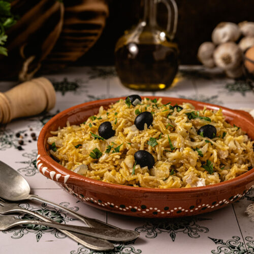

Bacalhau à brás

Description
Bacalhau à Brás is a typical Portuguese cod dish. One of the most popular dishes made with this fish, it consists of shredded cod, shoestring potatoes, thinly sliced fried onions, scrambled eggs, olives, and chopped parsley. It is widely consumed in Portugal and also in Macau.
Ingredients
- 600 g desalted codfish
- 200 g straw potato
- 6 eggs
- 1 onion - sliced
- 4 garlic cloves
- 2 bay leaves
- black olives
- olive oil
- parsley - chopped
- salt
- black pepper
Steps to make it
- Take a pan of water, bay leaves, and 2 cloves of garlic to boil
- As soon as it boils, add the codfish
- When it boils again, turn off the heat and set it aside for 15 minutes
- Remove the cod from the water and let it cool
- Once cooled, remove the skin and bones and shred the cod.
- Heat a frying pan over low heat in olive oil and saute the onion and 2 cloves of chopped garlic.
- Add the shredded cod and cook for a few minutes.
- Add the potatoes, mixing carefully.
- In a separate bowl, beat the eggs lightly with the help of a fouet.
- Add half of the beaten eggs to the codfish stew, mixing well
- Season with salt and black pepper to taste and let the eggs cook, always stirring the mixture
- Turn off the heat and mix in the rest of the eggs
- Sprinkle the dish with parsley and black olives
- Serve it hot
Go Back